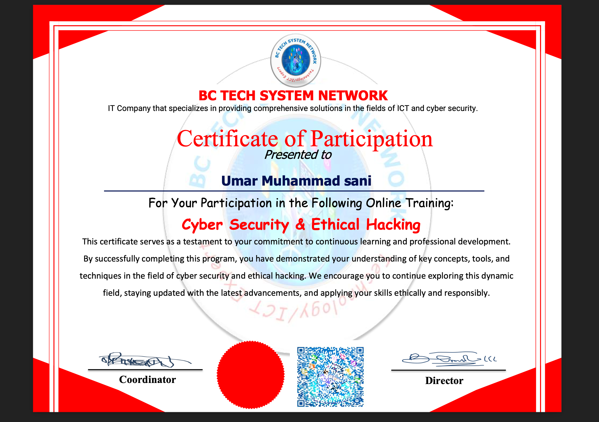

TRAINING & CERTIFICATIONS

Cybersecurity & Ethical Hacking Training

Nigerian Communication Commission Program
- Member, Nigerian Computer Society (NCS)
- Google IT Automation with Python (Coursera)
- Web Development Program Participant